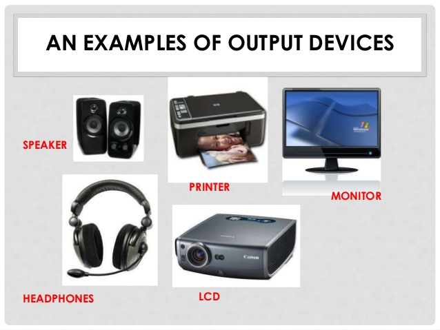
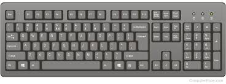
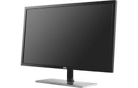
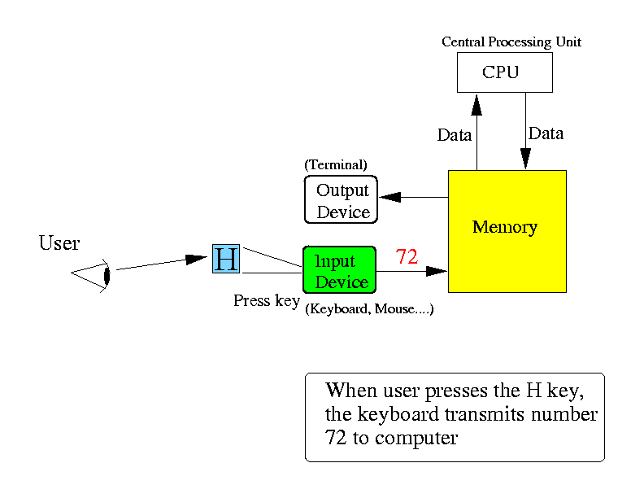
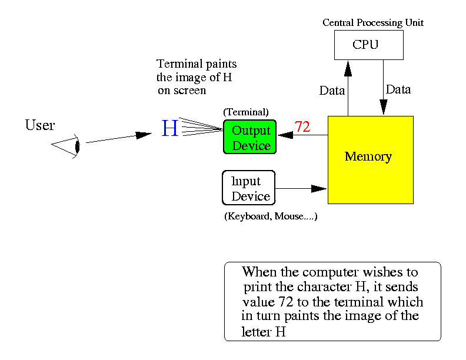

- Communication:
- Communication is a
2 way process:
- Input (into the computer):
- How does a human enter inputs to a computer ??
- Output (from the computer):
- How does a computer print outputs so a human can see (and understand) them ??
- Input (into the computer):
Communication between humans and computers are facilitated by special input and output devices
- Communication is a
2 way process:
- Input/output devices:
- Input device =
a device that
enable a human to
transmit data to
a computer
Examples:

- Output device =
a device that
enable a computer to
transmit data to
a human
Examples:

- Input device =
a device that
enable a human to
transmit data to
a computer
- Every
input/output device used
in human/computer communication
follow the following
methodology:
- Each input device
has a pre-defined set of
codes that
represent
the possible input values
that a human can enter
- The input device transmits the pre-defined code to the computer that represents a certain input
- Each output device
has a pre-defined set of
codes that
represent
the possible output values
that a human can receive
- The computer sends a code to the output device and the output device converts the code into human-visible information
I will discuss the communication methodology using the key board and terminal as examples (see below)
- Each input device
has a pre-defined set of
codes that
represent
the possible input values
that a human can enter
- Most commonly used
communication method between
a human and a
computer:
- Most commonly used
input device:
 key board
- Most commonly used
output device:
 Monitor
I will now illustrate the communication methodology using the key board and terminal as examples
- Most commonly used
input device:
- Code used in
key board and (text) terminal
devices:
- ASCII code or Unicode
- Before the introduction
of the Unicode:
- Key boards and terminal use the ASCII code
- Nowadays:
- Some devices
(e.g., using US keyboards) that
only allow
English-inputs
still use
ASCII code
- Many (advanced) devices (e.g., tablets, phones) use Unicode
- Some devices
(e.g., using US keyboards) that
only allow
English-inputs
still use
ASCII code
- How a
user
enters 'H' to
the computer:
 Explanation:
- The user looks
for a key that
has the symbol 'H'
on
the key board
- When the user
presses
the 'H' key
on the keyboard input:
- The keyboard is wired in such a way that when the 'H' key is pressed, it will transmit the ASCII code 01001000 (= 72 decimal) that represents the character 'H' to the computer.
I like to give you an evidence that the key board transmits ASCII codes to the computer
- The user looks
for a key that
has the symbol 'H'
on
the key board
- In CS170/CS171, you
were told to
use Java.util.Scanner to
reading integer from
the input.
Your Java programs would contain these lines:
import java.util.Scanner; // Import class from Java library ... Scanner in = new Scanner( System.in ); // Create Scanner object using the System.in object !!The System.in object in Java is associated with the key board.
The reason that you use System.in to create a Scanner object is so that the Scanner object will read from the key board
(You may have learned to use Scanner on an File object to read a data file.
Just than you know that: whatever object you use to create the Scanner object, it will read input from that object.)
The Scanner object contains methods to convert ASCII representation to 2's complement representation.
So what we do now is show you Java input without using Scanner:
- We will read input using only the System.in (key board) object !!!
- Consider the following
Java program that only uses
System.in for input:
// File: /home/cs255001/demo/atoi/JavaInput_1.java // // Demo reading input WITHOUT using Scanner utility class !!!! // public class JavaInput_1 { public static void main(String[] args) throws Exception { byte[] b = new byte[100]; int count; while ( true ) { System.out.print("Enter input: "); count = System.in.read(b); // Read from key board System.out.println("# characters read = " + count); for (int i = 0; i < count; i++) System.out.println(b[i]); System.out.println("\n"); } } }The method call System.in.read(b) will read an input line (until you hit <RETURN> key) and store it in the byte[] array b,
The method System.in.read(b) returns the number of characters in the input.
- Here's an sample execution (using the inputs "12<ENTER>" and
"123<ENTER>"):
cheung@aruba> java JavaInput_1 Enter input: 12 # characters read = 3 49 50 10 Enter input: 123 # characters read = 4 49 50 51 10
When you enter 12<ENTER>, the input values are: 49 50 10 because:
49 is the ASCII code for the character '1' 50 is the ASCII code for the character '2' 10 is the ASCII code for the character NEWLINE (ENTER)
- FACT:
Text files use the ASCII code
to encode/represent characeters
in the text files.
(This fact is easier to explain with a live demo (where I point out to you what to look for and where to look at) and I will demo this in class - so if you don't come to class, you will miss out on some stuff even most of the material are in webpages)
In other words: when we want to print text messages to a terminal, the output context is always ASCII code
- Text stored in a data file is also encoded in ASCII
Try doing this experiment:
- Edit a file
- Execute: od -c filename to see the content in "text" form
- Execute: od -b filename to see the content in "octal ASCII code" form
- Execute: /home/cs255001/demo/atoi/dumpint filename to see the content in "decimal ASCII code" form
- How a
computer
displays
'H' to a
human:
 Note: what is actually happening is the following:
- (The computer does
not know that
it wants to display
the letter 'H' !!!
- The letter 'H' is
represented
inside the
computer by
the ASCII code 01001000
(= 72 decimal)
- The computer wants to show the character that is represented by 01001000 to the human (user)
How the computer "communicate" 01001000 ('H') to a human:
- The computer sends
01001000 to
the terminal
- When the terminal receives the
ASCII code 01001000:
- The terminal is
wired in such a way that it will
paint this
"picture" on a
portion of the screen:
H
- The terminal is
wired in such a way that it will
paint this
"picture" on a
portion of the screen:
use
- (The computer does
not know that
it wants to display
the letter 'H' !!!
- Important fact:
- The key board
always uses
the ASCII codes
to
convey information
from human user to
the computer
- The terminal always uses the ASCII codes to convey information from the computer to the human user
- The key board
always uses
the ASCII codes
to
convey information
from human user to
the computer
- That means:
Text information Representation in ASCII code (binary) --------------------+------------------------------------------------ H 01001000 He 01001000 01100101 Hello 01001000 01100101 01101100 01101100 01101111But also:
Text information Representation in ASCII code (binary) --------------------+------------------------------------------------ 1 00110001 12 00110001 00110010 123 00110001 00110010 00110011Try it for yourself:
- Enter a number:
- The key board will send these
binary ASCII code to the computer as input:
- Enter a number: